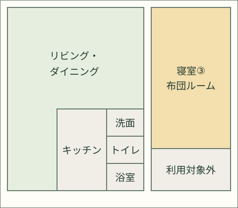
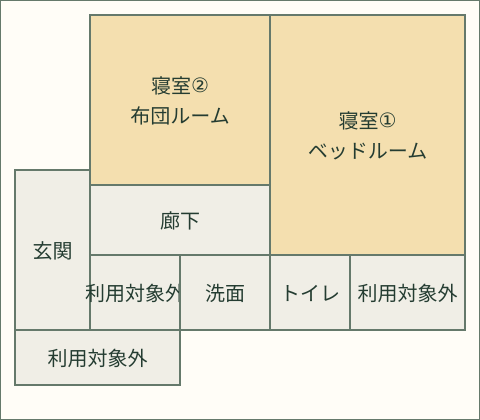

茨城県那珂市の里山 ・ まるごと貸切のログハウス
自然に包まれる、みんなのログハウス丸太小屋ほたる
那珂市の静かな里山に佇む、まるごと貸切のログハウス。最大20名まで泊まれるゆったりとした空間で、三世代旅行もご友人グループも、思い思いの時間をゆっくりと。
SCROLL
茨城県那珂市の里山 ・ まるごと貸切のログハウス
那珂市の静かな里山に佇む、まるごと貸切のログハウス。最大20名まで泊まれるゆったりとした空間で、三世代旅行もご友人グループも、思い思いの時間をゆっくりと。
丸太小屋ほたる — 那珂市の里山のログハウス
CONCEPT
丸太小屋ほたるは、茨城県那珂市の里山にたたずむログハウスです。丸太小屋と平屋、2棟をまるごと貸し切っていただけます。隣家からも離れたゆったりとした敷地には庭が広がり、田園風景に包まれています。三世代でのご旅行、ご家族での夏休み、気の置けないご友人グループとの集まりなど、大人数でも気兼ねなく、自然に囲まれてのびのびとお過ごしいただけます。
FACILITY
木の香りに包まれた丸太小屋と、隣接する平屋の客室棟。大人数でも快適に過ごせる、まるごと貸切ならではの自由な空間です。


丸太小屋と平屋、2棟をまるごと貸切。寝室3室で、ゆったりとした空間を大人数のグループ旅行や三世代旅行にもお使いいただけます。
隣接地には四季折々の生き物や草花に出会えるビオトープ（池）もあり、散策にお立ち寄りいただけます。隣家からも離れているのでプライベート感も満載です。
庭にはBBQ設備に加え、簡易かまども完備。炭火を囲んで語らうひとときや、かまどでの調理も楽しめます。
近くの水路や田んぼに囲まれた環境。初夏の夜には、敷地周辺でホタルの舞う姿に出会えることもあります。
竹を使った流しそうめんの体験が可能。夏ならではのひとときを、ご家族やご友人とお楽しみいただけます。
大きめの石造りの湯船に、ヒノキの天井・壁が香る浴室。旅の疲れを癒すリラックス効果は抜群です。
NATURE
四季の移ろいとともに表情を変える里山。ここでしか出会えない自然体験があります。

敷地周辺の水路では、初夏の夜になるとホタルが舞う姿を見られることがあります。灯りを消し、静けさの中でゆっくりと待つ時間そのものが、里山ならではの贅沢です。

庭に竹の樋を組んで楽しむ流しそうめん体験をオプションでご用意しています。お子様から大人まで、世代を超えて盛り上がる夏の定番アクティビティです。

敷地の周りには田んぼや雑木林が広がります。隣接地にはビオトープ（池）もあり、散策の途中に立ち寄って四季折々の生き物や草花に出会うこともできます。隣家からも離れているため、朝はウグイスやキジの声で目覚め、夕方はゆったりとした里山の空気を独り占めできます。
丸太小屋ほたるでは、薪ストーブの導入をはじめ、たけのこ掘り・田植え・竹細工教室といった里山体験メニューも今後充実させていく予定です。訪れるたびに新しい発見があるログハウスを目指しています。
丸太小屋ほたるで出会える、季節ごとの自然の楽しみ方
新緑と田植えの風景、里山が芽吹く季節
ホタル観賞・流しそうめん・満天の星空
実りの田園風景と紅葉散策
澄んだ空気に包まれる、静かな里山の夜
STAY GUIDE
2棟まるごと貸切だからこそできる、自由なプランニング。ご滞在のご参考にご覧ください。

木の香りに包まれたリビングダイニングは、囲んで過ごす時間が似合う空間です。


| 建物構成 | 丸太小屋（リビング・ダイニング・キッチン・寝室1室・浴室・トイレ）＋ 平屋の客室棟（寝室2室・トイレ・洗面）の2棟をまるごと貸切 |
|---|---|
| 定員 | 最大20名様（2棟まるごと貸切） |
| 寝具 | 最大20名。寝具の利用方法は人数・構成により異なり、ダブルベッドは2名でご利用いただく場合があります。 |
| チェックイン | 15:00〜（ご宿泊者全員のお名前などの情報をご宿泊の前日までにご提出いただきます） |
| チェックアウト | 〜11:00 |
| 駐車場 | 敷地内・無料。4台程度まで余裕あり、それ以上は要相談。 |
| ペット | 不可（身体障害者補助犬は法令に従い対応） |
| 喫煙 | 屋内は禁煙です。喫煙は屋外の指定エリアのみ可能です |
| 静かな時間帯 | 22:00〜7:00はお静かにお過ごしください |
| インターネット | 回線なし（Wi-Fiはご利用いただけません） |
| お子様 | 大人・子供同額。宿泊人数に含めてお申し込みください（ベビーベッド・エキストラベッドの用意はございません） |
| キャンセルポリシー | 直接予約のキャンセルはチェックイン8日前まで無料、7日前～当日100%。最終人数は7日前を基準に確定します。確定後の減員による返金はありません。増員は最大20名の範囲で寝具・運営条件等を個別確認し、承認後に料金を再計算します。返金にかかる振込手数料は施設が負担します。OTA予約は予約時の条件に従います。 |
対応言語：日本語・英語・中国語 ／ 運営：株式会社知雪
予約受付状況を確認施設全体で最大20名
各室を合計しても、20名を超える宿泊はできません。寝具の利用方法は人数・構成により異なり、ダブルベッドは2名でご利用いただく場合があります。寝具の利用方法による宿泊料金の変更はありません。


部屋の位置関係を示す簡略図です。縮尺・寝具の実配置・建物同士の位置関係を示すものではありません。
AROUND HERE
那珂市ならではの自然と学びのスポット。ご滞在と合わせてぜひお立ち寄りください。


なかLuckyFM公園（那珂総合公園）周辺の畑を約4haのひまわりが彩る、那珂市の夏の風物詩。丸太小屋ほたるからは歩いて行ける距離です。開催日や花火等の内容は年により異なります。最新情報は観光協会の案内をご確認ください。
直接予約は原則チェックイン28日前までにお申し込みください。28日前未満も、予約・準備状況に応じて個別にご相談を承ります。予約済みの日程と前後3日の予約不可期間は受け付けません。送信だけでは予約は成立せず、当施設からの予約確定連絡をもって成立します。
税込で4名まで28,000円／泊、5名以降は1名につき4,800円／泊。合計は（28,000円＋4,800円×4名を超える人数）×泊数です。料金は人数・泊数で決まり、寝具の種類や利用方法では変わりません。別途申し込む体験・オプションは有料の場合があり、お申込み前に料金をご案内します。
最大20名。寝具の利用方法は人数・構成により異なり、ダブルベッドは2名でご利用いただく場合があります。
チェックイン15:00～、チェックアウト11:00まで。早めのチェックインは事前にご相談ください。準備状況により可能な範囲で対応します。
直接予約のキャンセルはチェックイン8日前まで無料、7日前～当日100%。最終人数は7日前を基準に確定します。確定後の減員による返金はありません。増員は最大20名の範囲で寝具・運営条件等を個別確認し、承認後に料金を再計算します。返金にかかる振込手数料は施設が負担します。OTA予約は予約時の条件に従います。
銀行振込は原則チェックイン7日前までに全額の入金確認が必要です。7日前を過ぎて例外的に受け入れる場合は支払期限を個別に指定します。未入金の場合は予約を取り消すことがあります（自動取消ではありません）。宿泊料金のお振込みにかかる振込手数料は、お客様のご負担となります。
成人同伴のお子様は宿泊可能です。未成年者のみのグループはご利用いただけません。申告された宿泊者以外の方を事前承諾なく施設・敷地内に招き入れたり利用させたりすることは禁止します。法令違反、公序良俗に反する行為、性的サービスの提供・利用等を目的とした利用は禁止します。違反の状況に応じ、法令に従って利用中止・退去を求めることがあります。
ペット不可（身体障害者補助犬は法令に従い対応）。館内は電子タバコを含め禁煙。Wi-Fiはありません。駐車は4台程度まで余裕があり、それ以上はご相談ください。BBQ・火気は指定場所のみ、人工芝上は不可。使用機材は清掃し、炭・灰は指定場所へ処分してください。屋外の花火は中庭で22時まで、打上花火は禁止です。
四季の自然に囲まれた施設です。季節により虫が室内に入ったり、屋外・建物周辺に蜘蛛の巣等が見られる場合があります。心地よくお過ごしいただけるよう清掃・管理に努めていますが、自然環境の特性上、完全には防げないことをあらかじめご了承ください。
具体的なチェックイン方法はご宿泊前にご案内します。ご宿泊中の緊急時の連絡方法・連絡先は、ご宿泊前に個別にご案内します。
BOOKING REQUEST
日程・宿泊人数から予約受付状況と税込宿泊料金をご確認いただけます。即時予約ではありません。
税込・大人と子供は同額
税込・1名につき／最大20名
予約確定後にご案内します。
日程と人数を入力し、リクエストをお送りください。
内容と最新の予約状況、準備状況を確認します。
施設からの予約確定のご連絡をもって予約成立となります。
予約確定後に銀行振込と宿泊者情報の提出方法をご案内します。
〒311-0122 茨城県那珂市戸4692-306
水戸駅より約14km（車で約20分）
茨城空港より約34km
成田国際空港より約94km
※ご住所での検索では、実際の場所より少し離れた地点が表示される場合がございます。お越しの際は上記のGoogleマップのリンクからご確認ください。
※当施設は坂道の途中にございます。坂には入り口が3か所あり、坂の下から「当施設」「お隣のご自宅」「別の道へ抜ける入り口」の順となっております。日没後にご到着の場合は、坂の下の入り口が当施設である点をお間違えのないようご注意ください（日中は坂の途中から丸太小屋の建物が少し見えます）。